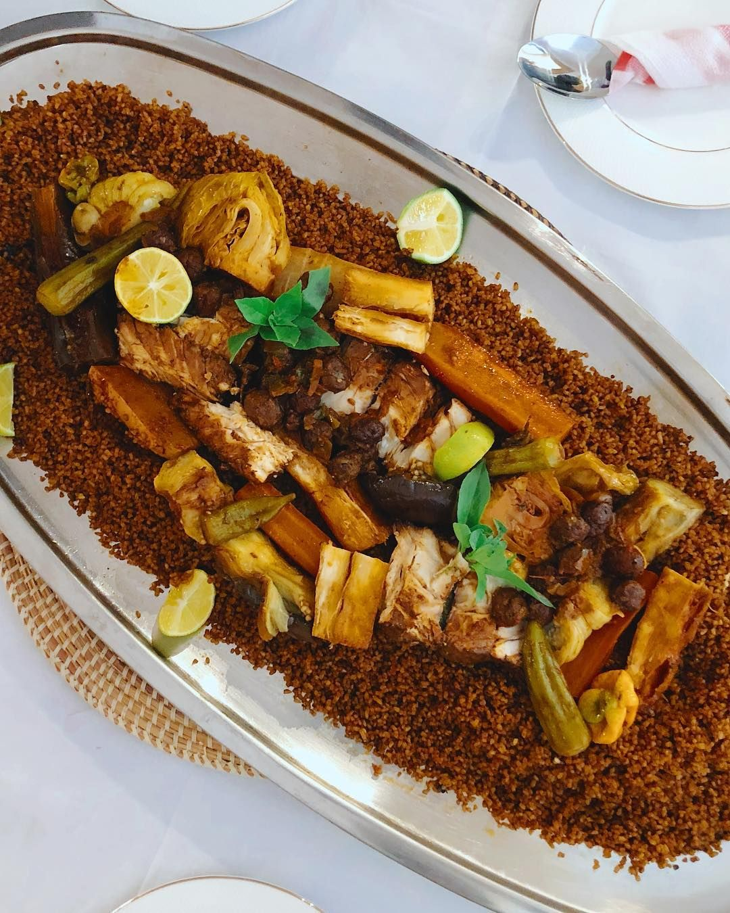
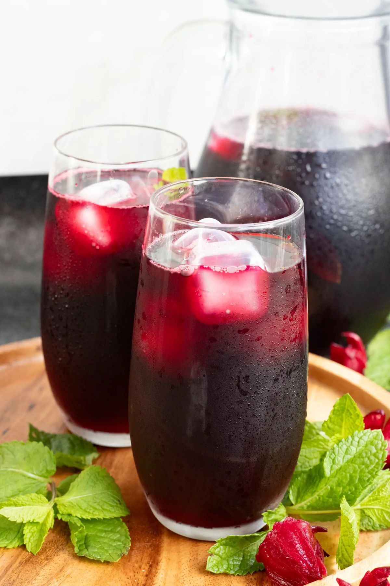
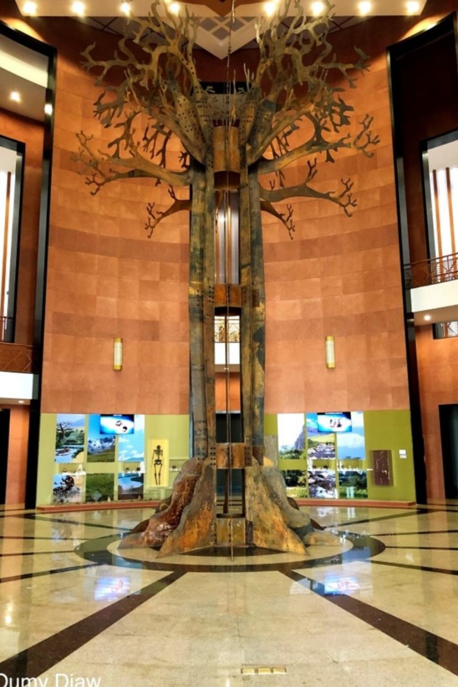
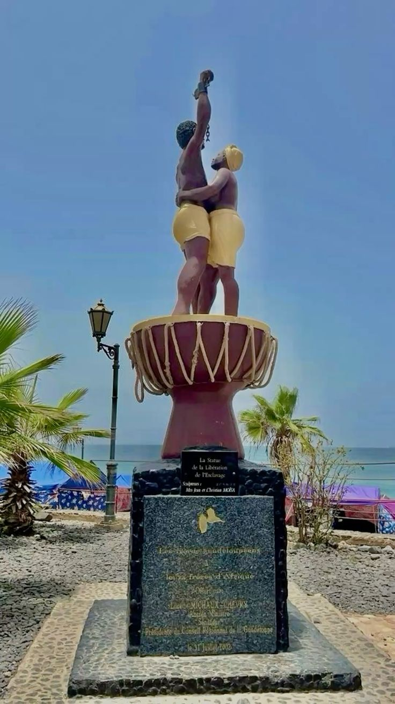
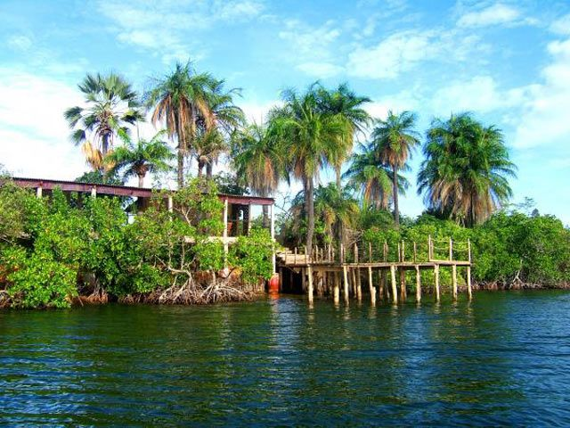
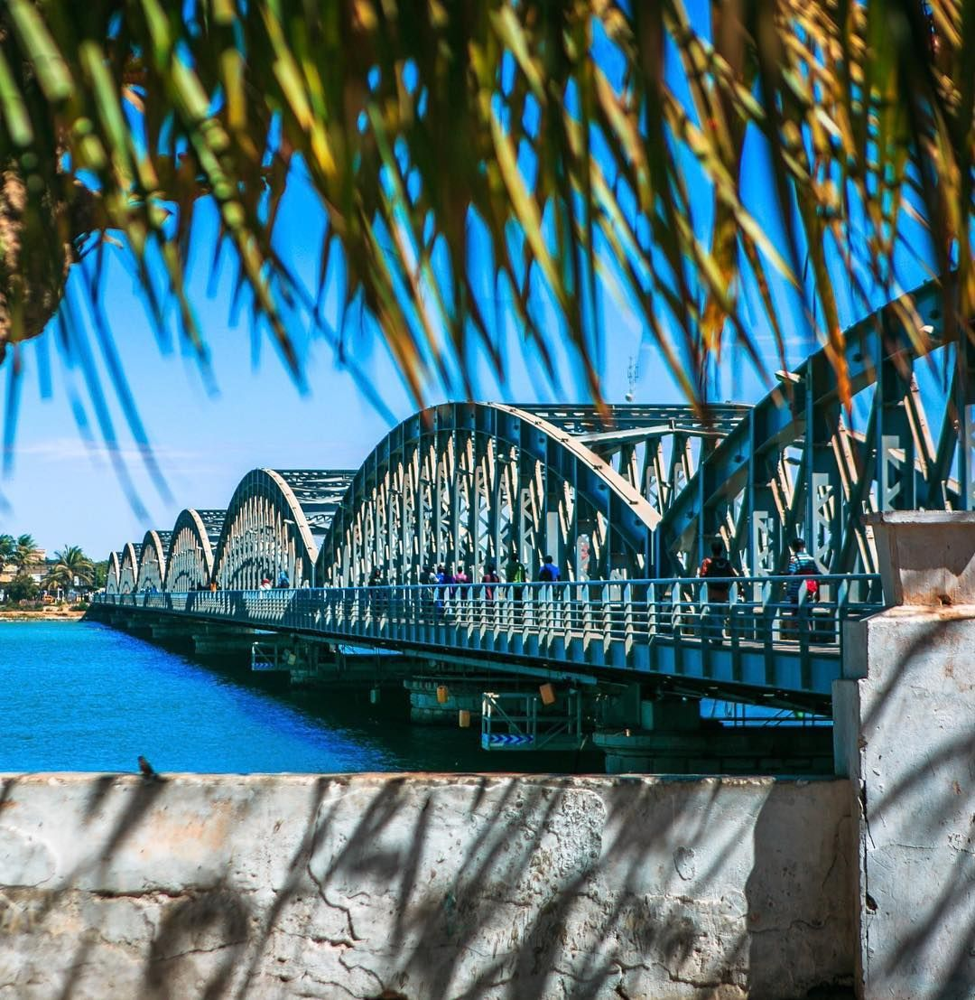
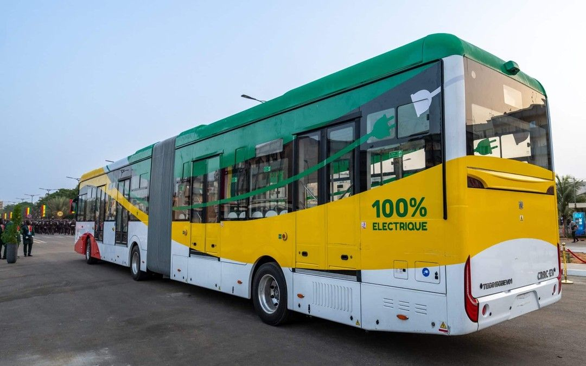
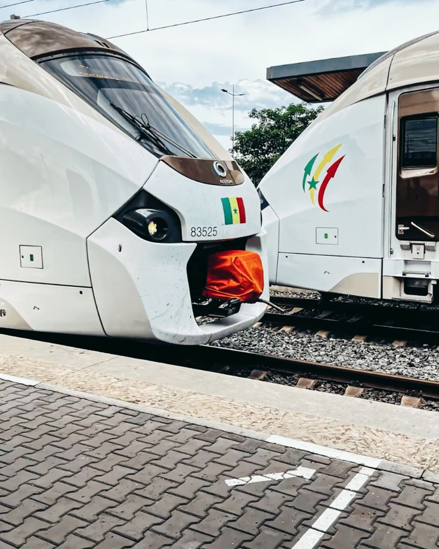

Le Sénégal est un pays d'Afrique de l'Ouest, réputé pour son hospitalité et sa richesse culturelle.
Il possède de nombreux sites touristiques, comme l'île de Gorée, le Lac Rose et le parc national du Niokolo-Koba.
La gastronomie sénégalaise est variée et savoureuse, avec des plats emblématiques tels que le thieboudienne, le yassa et le maafe.
Le Sénégal est aussi reconnu pour ses exploits sportifs, notamment en football, avec des trophées continentaux qui renforcent sa fierté nationale.
Entre traditions, modernité et dynamisme, le Sénégal reste une destination incontournable pour découvrir l’authenticité africaine.







